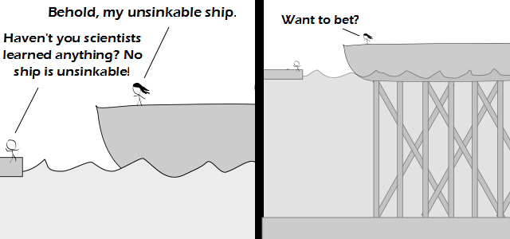

Comic JK 774
When I Feel Like It
⇤
<
?
>
⇥

⇤
<
?
>
⇥
Forum
.
RSS
.
Digg
.
Facebook
.
Reddit
.
Twitter
.
Stumbleupon
Just strap your mother to it. Her excessive body fat would make anything unsinkable. I could sink that if I had a submarine. Enter your thoughts on number 774 here. Please, no spamming, trolling, sinking ships, or sinking. >sinking in the rain? >>Sinking in the rain is acceptable >>>No. Silence, thee. I just wonder if it's still something you can call a ship, since it neither floats nor sails anymore. Might as well call it an oil rig without drills :P >Yes, I agree. It doesn't seem to be a ship. Also, it could probably still sink. I imagine you wouldn't even have to remove all the supports. >>It depends on the definition of ship you are using. For that matter, it also depends on the definition of sink, scientists, Haven't and is. >>Just to play devil's advocate, "ship" can be a pretty broad term. Think of air ships or space ships. >>>In all definitions, ships float. Whether its on water, air or in space. That is why jets aren't airships; they don't float; but blimps are. >>>>I think the point is more trolling on epic scale. I don't care what anyone says, this is HILARIOUS!!! But what's the other guy standing on? A sinkable jetty? >Yes. It's not a ship, and it's perfectly sinkable. I don't get it. >Nothing is actually a ship, and everything is actually sinkable. Show a little pragmatism, and stop being dense. >>Everyone knows that you wont sink if you aren't dense. >>>unless sailing on a sea of superfluid helium II... >>Pragmatism?!? I thought this was a SCIENCE! webcomic. >>>Isn't SCIENCE! the embodiment of pragmatism? >>There are plenty of things that are actually ships. Its just that she isn't standing on one. If the "ship" remains for hundreds of millions of years, then it will probably sink with its attached oceanic plate under a continental plate. ><3 Also, the girders could break, and, no longer having support, the ship would be sinkable. Is it still considered sinking if the ocean levels rise?